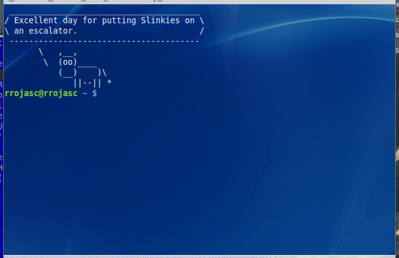
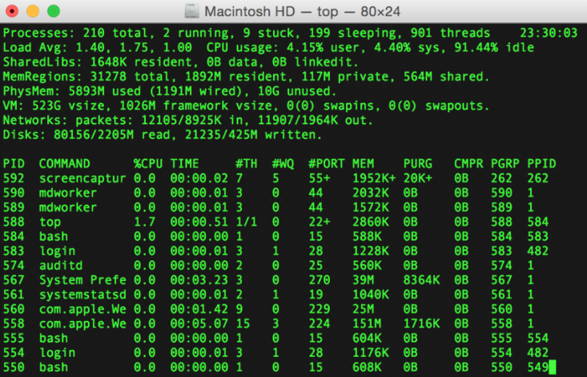
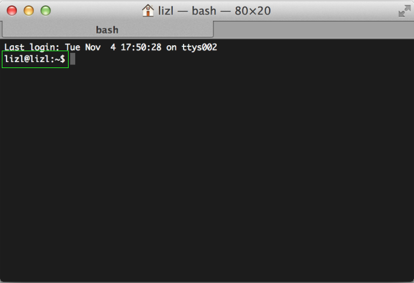
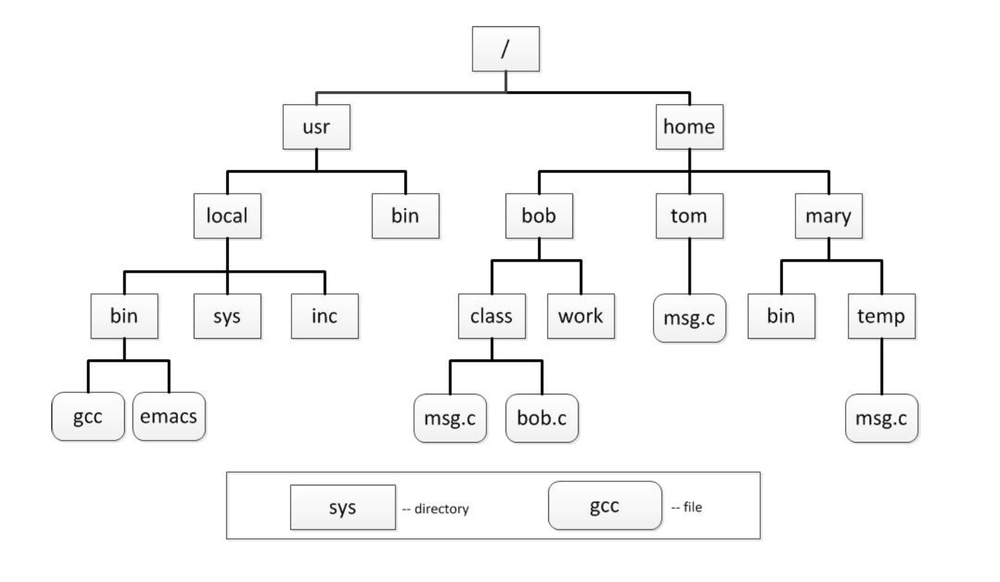
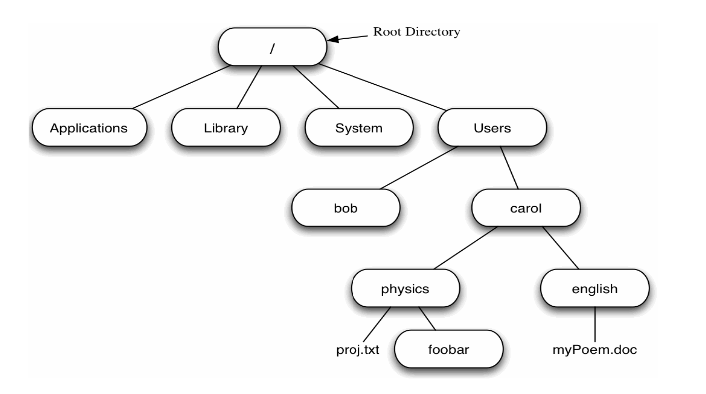
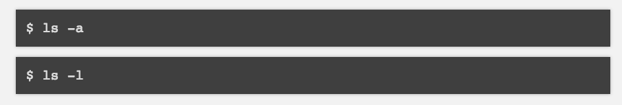

Learning the Terminal and Command Line
Terminal and Command Line Overview
- Terminal Introduction
- Terminal Commands
What we are going to learn
Deep-dive into how our computers are structured.
How to navigate the file system more effectively.
aka: program like a hacker!
Why do i need to know this?
These skills are critical for:
- Learning new tools
- Collaborating with teams
- Working with new JavaScript frameworks
- Securing your code
What is a Shell?
A text-based command interpreter
The most common shell (and default on OS X) is BASH
Newer macOS's are on ZSH, which are more customizable.
For OS X, use a shell via the “Terminal” app.
What is the Terminal?
The terminal is an interface in which you can type and execute text based commands.
This is how we access our Command Line Interface (CLI).
What is the Terminal?
What is the Terminal?
The terminal is the original interface for computers, before the invention of the GUI.
All commands, folder & directory creation, as well as application installations were all done in the terminal.
What is the Terminal?
Let's watch the first few minutes of this
Let's watch a live example of a built-in command!
Where to find the Terminal?
- Finder
- Applications
- Utilities
Click and drag the icon into your dock.
Then double click the icon on the dock to open.
Why Use the Terminal?
- Automate file actions with a script
- Serve a local directory for testing
- Use version control (like Git)
- Run open source projects
- Use automated build tools
- Connect to your servers
The Prompt
Usually shows your username and computer name (hostname).
It indicates that the shell is ready for you to enter a command.
The Current Directory
pwd (Print Working Directory)
Type it whenever you want to see what directory (folder) you’re in.
TRY It!
Directories
Containers for files or other directories.
Directories are also referred to as "folders".
Nested files and directories can be referenced using paths.
Who remembers the difference between absolute and relative paths?
The File System
Directories are organized in a tree-like structure. The top level directory is named “root” and represented by the single character ‘/’ known as the “front slash”.
The File System
Take a few minutes and write the path from the root directory at "/" to get to "carol".
Understanding the Terminal
Let's watch the first 10 minutes of this video
Terminal and Command Line Overview
- Terminal Introduction
- Terminal Commands
The command for changing directories
cd
cd means "change directory."
parent-to-child: cd [folder name]
child-to-parent: cd ..
Changing Directories
cd <relative path>cd <absolute path>cd <symbolic path>
- ->
cd ../exampleDir - ->
cd /exampleDir/newFolder - ->
cd ~/exampleDir
Practice I
Given our current working directory, how would you go to the new working directory?
| current working directory | cd command using absolute path | cd command using relative path | new working directory |
| /home/bob | cd /home/bob/class |
cd ./class |
/home/bob/class |
Practice II
Given our current working directory, how would you go to the new working directory?
| current working directory | cd command using absolute path | cd command using relative path | new working directory |
| /home/bob | cd /home/mary/temp |
cd ../mary/temp |
/home/mary/temp |
Reviewing Paths
- Current Directory: (.)
- Parent Directory: (..)
- Home Directory: (~)
- Root Directory: (/)
Common Commands in Terminal
| Tool | Action |
|---|---|
ls |
List what is in the current directory. |
cd |
Change directory. |
mkdir |
Make a new directory. |
touch |
Create or update an existing file's timestamp. The touch command expects the name of your new file as an argument. |
mv |
Move a file from one place to another. See Docs. |
Common Commands in Terminal
Bookmark this cheatsheet!
Flags
Some commands have additional options that allow flags.
Flags are preceded by a hyphen, and are often a single character.
ls -a = show hidden files
ls -l = use a “long list” format (shows more verbose output)
Terminal Commands
- The left/right arrow keys let you edit within a command
- The up/down arrow keys let you select previous commands
- CTRL+A goes to beginning of command, CTRL+E to the end.
- The tab auto-completes file names! Best friend!
Command Line Project
Use Terminal to make the folder system called:
terminal-practice
- Create the root folder in your Documents folder
- Make sure to add folders for your CSS and JS
- Add a new index.html file

Terminal and Command Line Overview
- Terminal Introduction
- Terminal Commands
THE END
Thank you for your attention!